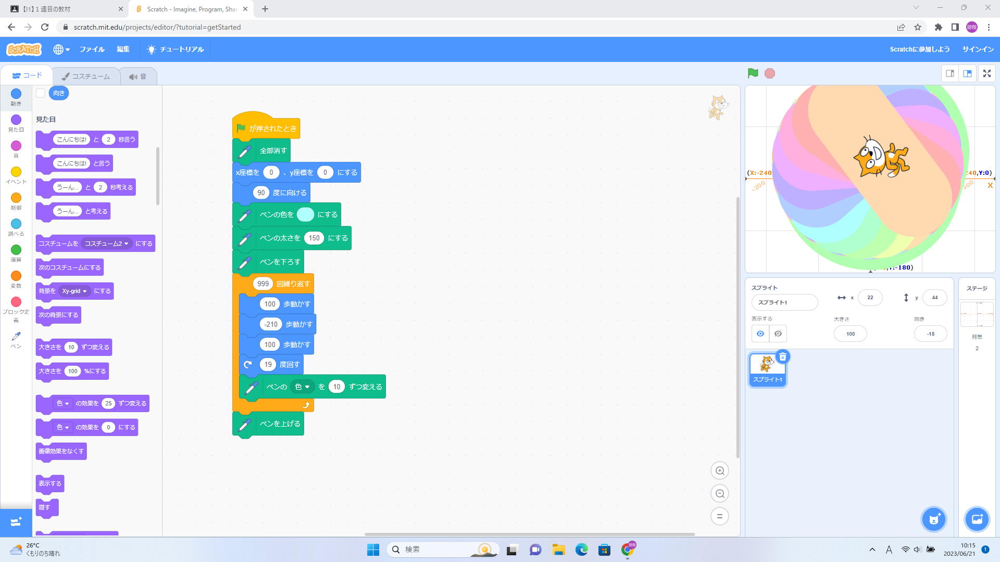
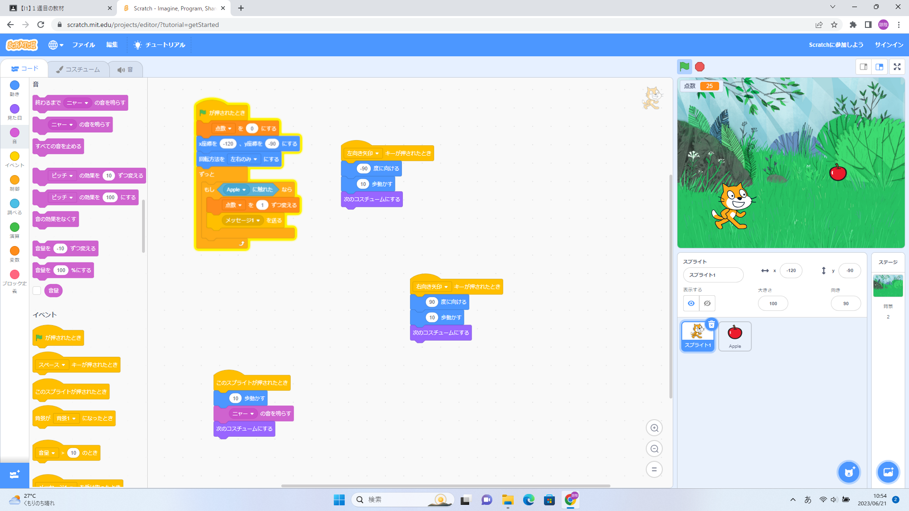

1週目のレポート ： 公大高専１年実習I-1
2a班10番 LAST
第1週目
1-1 サイエンスアート

1.内容
スクラッチを使って線を書くプログラムを作り、またその他の動き方を追加しアートを作成した。
2.感想
モノととなる線を描くプログラム以外に変わった動き方をするようなプログラムを作れず元の形と大差ないものになってしまって残念だった。
1-2 ゲーム

1.内容
Scratchを使って矢印キーでネコが動くようにプログラムしまた、リンゴがランダムな時間で落ちてくるようにして 変数を使ってネコとリンゴがあたった回数（リンゴを取った回数）を計測するプログラムをした。
2.感想
私は、以前Scratchを少ししか触ったことがなかったため、変数について知らなかったので、今回の実習で学びScratchはとても面白いなと思った。
1-3 ホームページ作成
私のホームページ
1.内容
githubを用いてhtmlを書き換えて自分のホームページを作成した。
2.感想
githubでもともと書かれている文を書き換えるだけなので比較的簡単であったが、いままで見たことなかったため少し苦戦しました。
ですが、これからのレポートの作成をgithub、htmlを使って作成していくので、頑張って慣れていこうと思います。